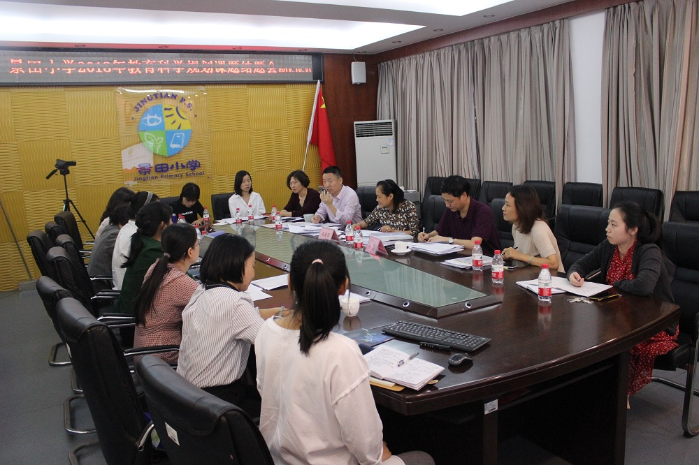
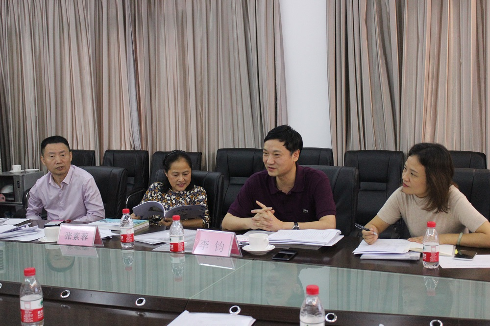
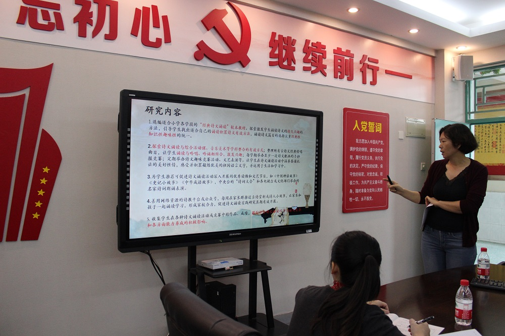
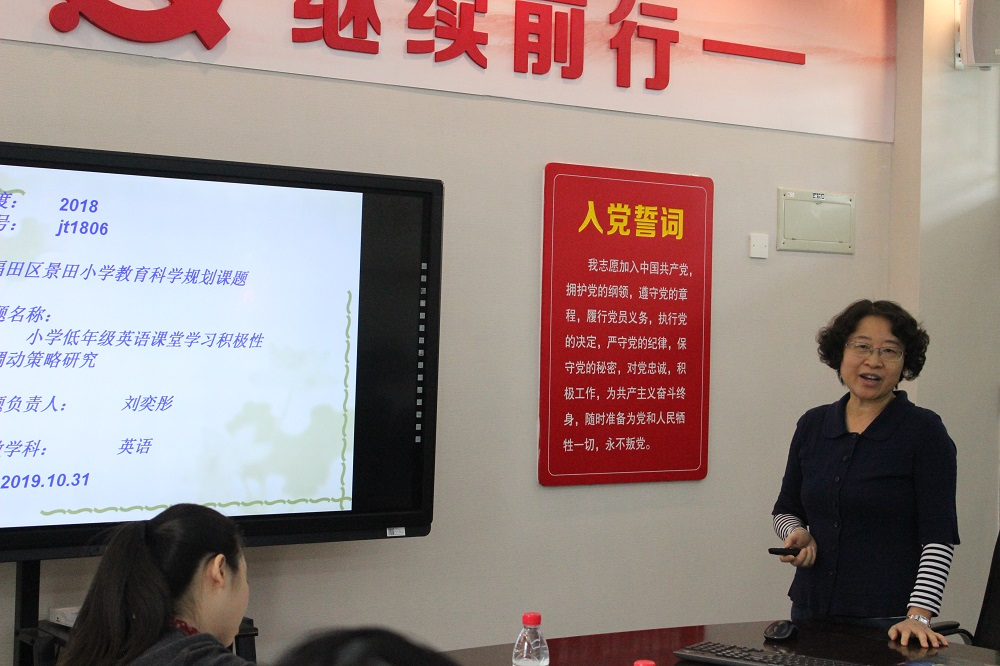
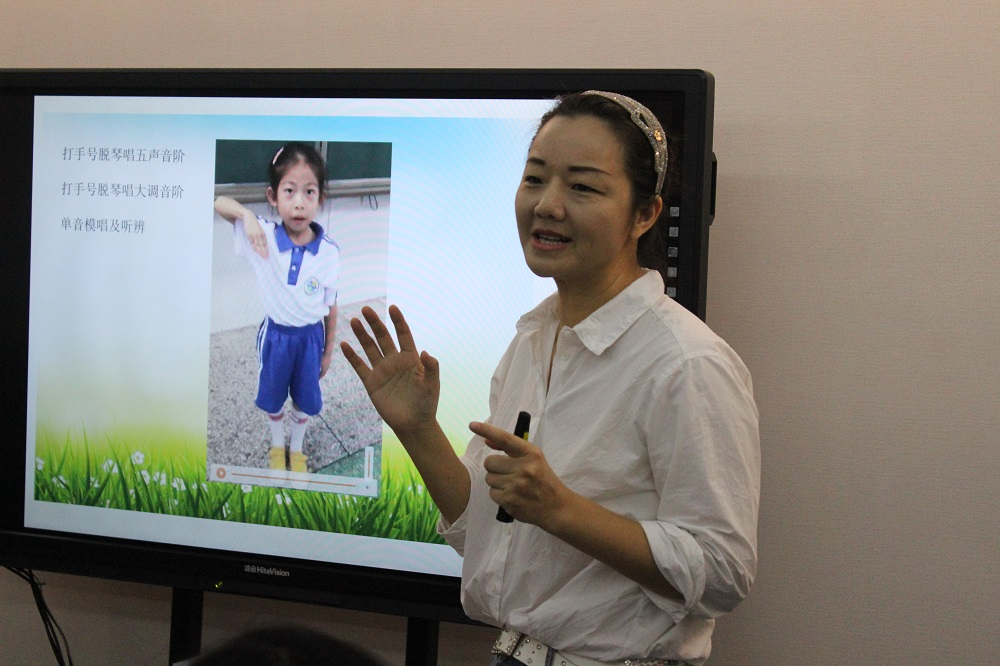
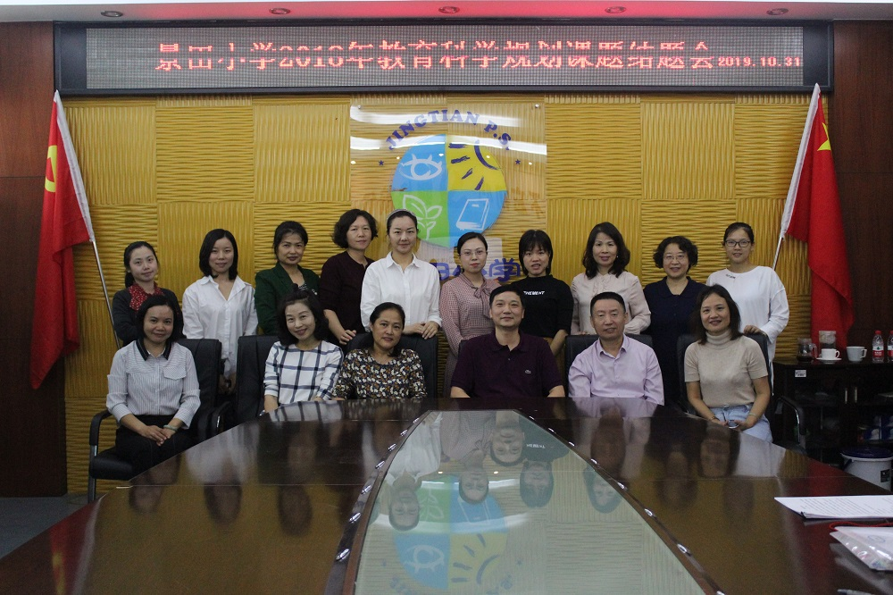

——蒲城县北关小学-蒲城县桥山中学2018年教育科学规划课题结题会
2019年10月31日，蒲城县北关小学-蒲城县桥山中学在二楼会议室召开2018年教育科学规划课题结题会。参加此次结题会的评审专家有深圳市教育科学研究院课程研究室主任、政策研究中心副主任张素蓉老师，深圳大学师范学院教育系主任、教育学博士李钧老师。此外，我校张也校长、教科室邱海华主任、5个课题组成员出席了本次会议。


结题会议主要分两大议程。第一项议程为各个课题组主持人汇报课题研究成果。第二项议程为专家提问及提出改进意见。

刘海景老师主持的《小学“经典诗文诵读”校本课程开发与实践研究》，一年来课题组成员深耕课堂教学，整合学科和社区资源，采取灵活的研究策略，运用丰富的形式，开发出六辑诗词画册、活动课例和系列古诗新唱歌曲为架构的课程体系，为我校语文教学充实了资源，为后续开展相关研究的老师提供了可资借鉴的经验。两位专家都认为该课题做到了老题新做，多维度立体化多感官多形式开展研究，成果喜人，数据可信，很有推广价值。专家建议可以“小学经典诗文诵读策略及其效果的调查研究”为主题，把具体的实践策略写成系列文章进行推广。

刘奕彤老师针对所主持的《小学低年级英语课堂学习积极性调动策略研究》课题，从核心概念界定，选题背景，缘由，研究方法等方面进行了详细的汇报，两位专家从小学低年段学生心理特点，研究具体做法，效果观测等方面提出了细致的点评，并建议可以从先进学校做依据，倒逼出调动策略的方法。

龚萍老师具体汇报了所主持的《促进小学低段音乐课堂有效聆听的行动研究》课题的研究过程。龚老师主要通过音准的训练，节奏的训练，二拍子、三拍子、四拍子的训练及器乐进课堂的方式，研究如何促进小学低段学生的有效聆听。专家们细心听取了报告，并提出了实质性建议：该课题可再加强理论依据、增加有效数据的观测，并建议课题组老师在研究的过程中，形成自己的教学风格。
郑颖娜老师针对课题《基于Scratch的游戏再开发与教学策略研究——以蒲城县北关小学-蒲城县桥山中学高年级为例》，从游戏开发的含义和价值，再开发策略和教学策略，以及课题的成果和效果三个方面进行阐述，汇报一年来课题研究的情况。两位专家有的放矢，从创新能力的观测指标，学生个案的研究方法，游戏开发的负面影响，开发软件的育人立场，学术论文的撰写技巧等方面对该课题进行了细致的指导。
吴贤君老师主持的《小学语文课堂抓住“课眼”有效提问的策略研究——以小学语文中低段为例》，探究如何引导教师有意识地去挖掘“课眼”，在课堂上抓住“课眼”对学生进行有效提问。经过一年来的研究，该课题总结出了五大抓住课眼的策略，形成了五大抓住课眼进行有效提问的策略，精编了16篇教学设计。专家在肯定该课题的成果之余，对课题提出了中肯的建议：课题组成员可再深入研究“课眼”概念，更加科学界定“课眼”，加强两套策略的关联性，通过课眼让课堂提升一个阶段。
结题会上，两位专家均对蒲城县北关小学-蒲城县桥山中学老师的研究热情大加赞赏，五个课题组研究教师都能结合自己的教学实际做有价值的研究，务实、踏实，并认为研究教师悟性高，研究报告规范，比起刚开题研究时，课题组教师都有了很大进步。学校课题研究过程管理到位，较去年的课题研究，今年的课题成果又上了一个新台阶。

张也校长对结题会作总结性发言。张校长指出，能够听到专家如此细致专业的点评，是在场教师的幸福；课题研究教师在专家的引领下取得了不小的进步，教师的进步不仅促进了自身的成长，更推动了学生的成长，那是作为一名教师的幸福。我们要珍惜这样的幸福，并朝着这条幸福之路不断前进。
据悉，蒲城县北关小学-蒲城县桥山中学课题研究正开展得如火如荼，教师课题研究与学生小课题研究全面开花，校园研究氛围越来越浓厚。蒲城县北关小学-蒲城县桥山中学掀起了一股研究热潮，教师们正逐渐由“传统型”教师向“研究型”教师转变，相信在专家的引领下，学校的支持下，教师与学生研究成果将会越来越丰硕！
文/余利芬 郑小鹏
图/青雅媛